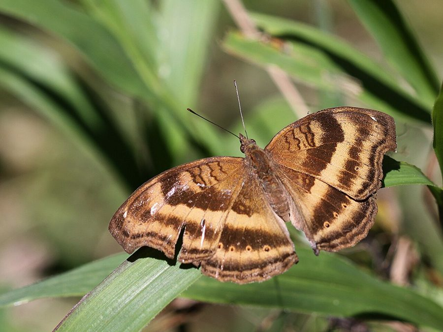

चॉकलेट पैंज़ीChocolate Pansy
Junonia iphita · Nymphalidae · INS-0103

- Scientific name वैज्ञानिक नाम
- Junonia iphita (Cramer, 1777)
- Family कुल
- Nymphalidae
- Hindi हिंदी
- चॉकलेट पैंज़ी
- Local names स्थानीय नाम
- chocolate pansy, chocolate pansy butterfly, choklet pansy, pansy
- Status here यहाँ की स्थिति
- native
- Movement आवागमन
- Resident, here all year
- IUCN IUCN
- not evaluated
- Review समीक्षा
- audited and independently read
When to look कब देखें
Present all year. साल भर मौजूद।
Uses and possibilities उपयोग और संभावनाएँ
Drawn from the documented uses in the profile below, where each is labelled traditional, current or a research lead. All uses →
Tell it apart from इनसे अलग पहचानें
चॉकलेट पैंज़ी / Chocolate Pansy
Junonia iphita (Cramer, 1777) — Nymphalidae
चॉकलेट पैंज़ी — पूर्वी उत्तर प्रदेश के खुले मैदानों और खेतों में आम तौर पर पाई जाने वाली एक मध्यम-बड़ी भूरी तितली है। इसके पंखों का रंग गहरा चॉकलेट भूरा होता है जिस पर बड़ी आँख जैसी गहरी नीली लकीरें (eyespots) होती हैं। ये आँख जैसे दाग़े शिकारियों को डराने में मदद देते हैं। नर की उड़ान तेज़ और तेज़ होती है, जबकि मादाएँ धीमी होती हैं। यह तितली घास की पत्तियों पर अंडे देती है।
Quick Identification त्वरित पहचान
| Feature | Description |
|---|---|
| Size | Medium to large butterfly (body length 22–26 mm; wingspan 60–75 mm) |
| Coloration | Dark chocolate-brown or blackish-brown upper surface |
| Eyespots | Two large, prominent eyespots with dark blue or purple iridescent centers on each wing |
| Eyespot structure | Each eyespot typically has a pale or whitish ring surrounding the blue centre |
| Flight | Males patrol swiftly; females are slower and less conspicuous |
| Behaviour | Males are more frequently seen; females spend more time on grasses |
Field tip: Look for a dark brown butterfly with large, striking blue eyespots on each wing, perching or flying over grassland. The dark brown coloration and blue eyespots are distinctive. Compare with similar Pansy species: Lemon Pansy is pale yellow with eyespots; Grey Pansy is greyer; Peacock Pansy is larger with more complex patterns.
Morphology आकारिकी
Biometrics (typical measurements in northern Indian plains):
| Measurement | Range |
|---|---|
| Body length | 22–26 mm |
| Wingspan | 60–75 mm |
| Forewing length | 28–35 mm |
Body: Stocky, dark brown-fuscous, with clubbed antennae.
Wings:
- Dorsal (upper) surface: The ground colour is dark chocolate-brown or blackish-brown. The forewing contains two large, well-defined eyespots with iridescent dark blue or purple centers, surrounded by pale yellowish rings. The hindwing contains one or two smaller eyespots. The wing margins may have faint pale bands.
- Ventral (lower) surface: Paler, with similar eyespot structure but more muted coloration.
Eyespot Function: The large eyespots serve as a startle defence mechanism. When threatened, the butterfly rapidly opens its wings, flashing the large eye-like markings to startle predators.
Sexual Dimorphism: Males are more active and have darker, more vivid eyespots. Females are duller and larger, spending more time on the ground.
Behaviour & Ecology व्यवहार और पारिस्थितिकता
Swift grassland flyer with startle defence. The Chocolate Pansy is an active butterfly that inhabits open grasslands and scrubland. Males are territorial and perch on low grass stems, rapidly chasing competitors and pursuing females. They are attracted to damp earth and mineral-rich mud, where they often congregate. The females are more cryptic, spending time on or near grasses where they lay eggs. When threatened or surprised, the butterfly rapidly opens its wings, flashing the large eyespots, which startles predators.
Grass specialist. The caterpillar is a grass feeder, specialized on Echinochloa and related grass species, making it one of the generalist butterflies in agricultural landscapes.
Life Cycle / Phenology जीवन चक्र
| Stage / Season | Event |
|---|---|
| Egg | Laid singly on grass stems; pale yellow; hatch in 3–5 days |
| Larval (Caterpillar) | 4–5 instars; mature caterpillar 20–24 mm long; brownish with darker stripes; development 12–16 days |
| Pupa | Hanging chrysalis; brown or grey; emerges in 8–11 days |
| Adult | Emerges year-round; peak abundance June to November; lifespan 2–3 weeks |
Host Plants or Prey आहार
Larval host plants:
- Echinochloa species (barnyard grass), Paspalum, and other common agricultural and wild grasses.
Adult nectar sources:
- Low flowering herbs, wild composites, flowering weeds, and cultivated flowers.
Predators / Natural Enemies शत्रु
- Birds: Insectivorous birds are deterred by the eyespots; dragonflies are predators.
- Spiders: Jumping spiders and grass spiders.
- Parasitoid Wasps: Small wasps parasitize caterpillars and pupae.
Agricultural / Human Relevance कृषि प्रासंगिकता
Pollinator. The Chocolate Pansy is a frequent visitor to flowering crops and grassland herbs, serving as a pollinator.
Grassland indicator. Its abundance indicates healthy grassland and habitat quality in agricultural landscapes.
Expected Locally स्थानीय रूप से अपेक्षित
Not a field record. Written from published accounts for eastern Uttar Pradesh. No confirmed local sighting yet — if you have seen it, that is what the atlas needs.
अभी तक स्थानीय पुष्टि नहीं। यह विवरण प्रकाशित स्रोतों से है, किसी अवलोकन से नहीं।
To be expected in Basti district throughout the year in grasslands, open scrublands, and margins of cultivated fields. Look for dark brown butterflies with large blue eyespots on each wing flying over open ground or perching on grass stems. Check grass stems for brown caterpillars. Peak abundance during the monsoon and post-monsoon period (June to November). Males are more frequently seen than females. The first local record would be a photograph with place and date; send it to the atlas contact on the About page.
Distribution वितरण
Global range: Widespread across South Asia, Southeast Asia, and parts of East Asia.
In India: Distributed throughout the peninsula and the Gangetic plain.
In Uttar Pradesh: Abundant resident in all grassland and agricultural districts.
In Basti district / eastern UP: Expected in all grass-dominated habitats throughout the year.
Research Questions शोध प्रश्न
Anyone can investigate these | कोई भी इन प्रश्नों की जाँच कर सकता है
- Which grass species support the most Chocolate Pansy caterpillars in Basti? — Survey and record caterpillars on different grass species.
- Do birds actually attack the eyespots less frequently than they would attack unmarked wing regions? — Conduct field observations of predation attempts.
- How many generations does the Chocolate Pansy produce in one year in Basti? / बस्ती में चॉकलेट पैंज़ी एक साल में कितनी पीढ़ियाँ बनाती है? — Track emergence timing throughout the season.
- What is the size relationship between eyespot size and predator avoidance success? — Measure eyespot dimensions and monitor predation rates.
- How far do Chocolate Pansy butterflies disperse from their birthplace? — Mark and recapture individuals.
Similar Species मिलती-जुलती प्रजातियाँ
| Species | How to tell apart | हिंदी | |
|---|---|---|---|
| Lemon Pansy (Junonia lemonias) | Pale yellow or cream-yellow ground colour; eyespots with lighter yellow rings | नीबू पैंज़ी — पीली | |
| Grey Pansy (Junonia atlites) | Grey-brown ground colour; smaller eyespots; duller overall appearance | ग्रे पैंज़ी — भूरा, कम जीवंत | |
| [[blue_pansy\ | Blue Pansy]] (Junonia orithya) | Blue iridescent patches on wings in addition to eyespots; more elaborate pattern | नीली पैंज़ी — नीली पट्टियाँ |
| Peacock Pansy (Junonia almana) | Larger; eyespots with red or orange centers; four eyespots on forewing | मोर पैंज़ी — बड़ा, लाल आँखें |
Field rule: A medium to large dark brown butterfly with large, prominent eyespots with dark blue or iridescent centers on both wings, is the Chocolate Pansy.
Taxonomy & Classification वर्गीकरण
Original description. Pieter Cramer described the Chocolate Pansy as Papilio iphita in 1777 in his work Papillons exotiques des trois parties du monde Asie, Afrique, et Amérique (Vol. 3, p. 49, Pl. 208). The type locality is India. The genus Junonia was later established for these pansy butterflies characterized by prominent eyespots.
Subspecies. The nominate subspecies J. i. iphita occurs throughout the Indian subcontinent.
Family and order placement. Order Lepidoptera, family Nymphalidae, subfamily Nymphalinae.
Phylogenetic notes. Junonia is a genus of Afro-Eurasian nymphalid butterflies, characterized by prominent eyespots used in predator deterrence.
IUCN status rationale. Not evaluated. Common and widespread, under no conservation threat.
Photo Gallery फोटो गैलरी
No photos yet — add field photos to media/species/chocolate_pansy/ and run node scripts/sync_photos.js.
Photos needed आवश्यक फोटो
- [ ] Adult on grass (घास पर)
- [ ] Adult with wings open (खुले पंख)
- [ ] Caterpillar on host grass (इल्ली)
References संदर्भ
- Cramer, P. (1777). Papillons exotiques des trois parties du monde Asie, Afrique, et Amérique. Vol. 3, p. 49, Pl. 208. Amsterdam. [original description]
- Bingham, C.T. (1905). The Fauna of British India, including Ceylon and Burma. Butterflies. Vol. 1. Taylor & Francis, London.
- Kehimkar, I. (2008). The Book of Indian Butterflies. Bombay Natural History Society, Mumbai.
- Kunte, K. (2000). Butterflies of Peninsular India. Universities Press, Hyderabad.
- Zoological Survey of India (2010). Fauna of Eastern Uttar Pradesh.
- GBIF Occurrence Data — Junonia iphita, Uttar Pradesh (2010–2025).
Source file: species/fauna/insects/chocolate_pansy.md